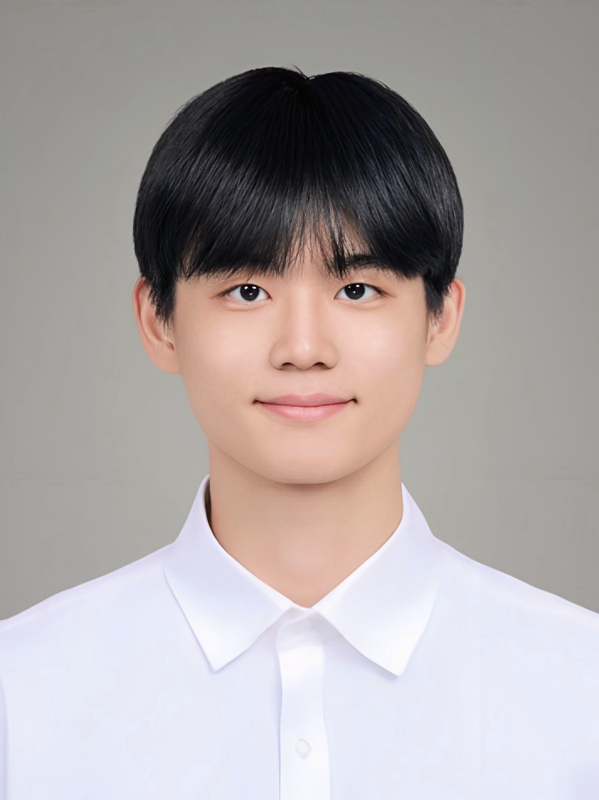

|
Duhoe Kim
I am currently a research intern at Visual & Geometry Intelligence Lab.
I received my B.S. degree in Computer Science and Engineering from Chung-Ang University with honors of summa cum laude in 2025.
My research interests are in generative model and deep learning. Especially, I am interested in flow models and diffusion.
Email /
Github
|

|
🎓 Education
Chung-Ang University
B.S. Student in CSE
GPA: 4.34/4.5, Major GPA: 4.46/4.5
2020.2 ~ 2025.8
|
|